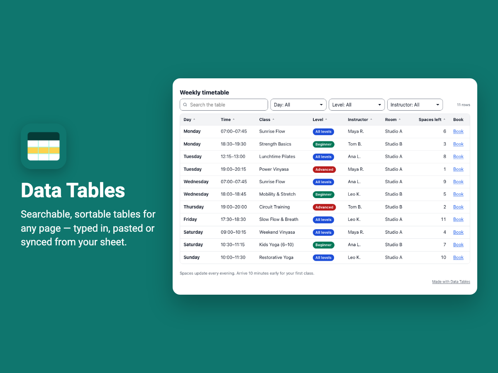
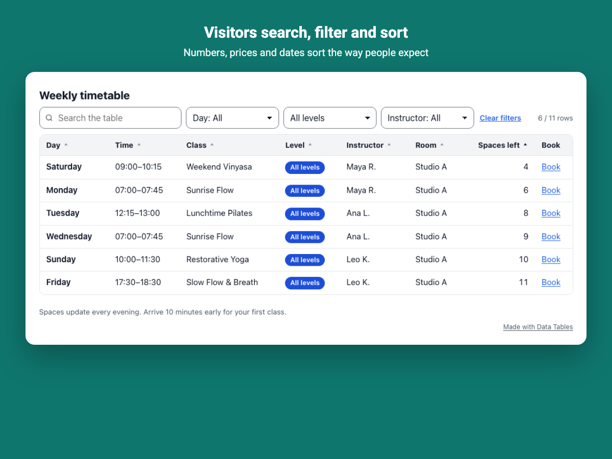

Data Tables & Sheet Sync for Wix
Put class timetables, price lists, product specifications, league tables, team directories and event line-ups on any page of a Wix site, with search, filters and sorting your visitors understand at once.

What it does
- Search across the whole table, dropdown filters per column and sorting by any column.
- Prices, numbers and dates sort correctly in any currency and notation (1,200.50 or 1.200,50; $, €, £, ₹, kg, %).
- Column types: text, numbers, dates, links, email and phone links, images, yes/no marks, star ratings, progress bars and colored badges.
- A totals row with sums, averages, minimums, maximums and counts.
- A spreadsheet-like editor: type, paste a block of cells from Google Sheets or Excel, or open a CSV file.
- Link a shared Google Sheet or a CSV address and the table refreshes by itself; the last good version stays if a refresh fails.
- Readable cards on phones, six themes, accent color, text size, a transparent mode and translated copies for multilingual sites.

Guides
Questions
Do I need a paid plan?
No. The Free plan includes three live tables with up to 500 rows each, every column type, search, filters and sorting, phone cards, six themes, CSV import and export, and a linked sheet refreshed once a day. Premium adds unlimited tables, up to 5,000 rows, hourly refreshes, download and print buttons for visitors, your own colors and font, row highlights, and removes the credit line.
Can the table update from my spreadsheet?
Yes. Share the sheet so anyone with the link can view it and paste its address in the app. The table refreshes by itself; if a refresh ever fails, the last good version stays on your page and the dashboard says why.
Do my visitors see hidden columns or the sheet address?
No. Hidden columns and the address of a linked sheet are never sent to the page.
Does it work on phones?
Yes. Tables that do not fit a small screen turn into readable cards, one per row.
See it in the Wix App Market